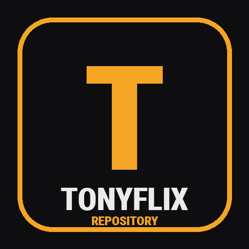

TONYFLIXMovies and TV shows on Kodi, with a home screen that's quick even on cheap boxes. Setup takes about 10 minutes.
In Kodi, it will show one file: tonyflix-setup.zip
Use the TV remote. "Select" means the OK or center button.
Turn on Unknown sources. A warning appears. Choose Yes.
Select <None> and type the address from above, exactly:
https://singulainthony.github.io/tonyflix/
Choose OK. In the name box below it, type tonyflix, then choose OK.
Select tonyflix, then tonyflix-setup.zip.
A few seconds later the Set up TonyFlix screen opens by itself. The speed setting is already picked for your box. Choose Start setup.
One screen shows the progress for 2–3 minutes. You don't need to press anything.
The last screen lists your accounts. Select one and a code appears on the TV. On your phone:
The TV notices by itself and marks the account Signed in. Real-Debrid is listed twice, once for each player. Sign in to both so the backup player works too. Then choose Finish.
Kodi closes by itself. Open it again and TonyFlix starts. Enjoy!
The power button at the top of the TonyFlix home screen opens a menu with everything below.
Check the box is online, and that the address is typed exactly as shown, starting with https:// and ending with /.
To fix a typo: Settings › File manager, highlight tonyflix, press and hold Select (or the menu button), and choose Edit source.
The box isn't running Kodi 21. Check the version under Settings › System information, then see Getting Kodi 21.
Usually a brief internet hiccup. Open the power menu › TonyFlix › Run full setup again. Anything already installed is skipped, so it's quick.
Real-Debrid is usually the cause. Check your subscription hasn't run out at real-debrid.com, then open the power menu › Accounts.
That row comes from Trakt. Open the power menu › Accounts and sign in to Trakt. It fills in as you watch.
TonyFlix needs Kodi 21. If the box has no Kodi, an older one, or Kodi 22, install Kodi 21.3:
Then stop the app store from updating Kodi: open Kodi's page in the store, open its ⋮ menu, and turn off Enable auto update. TonyFlix doesn't work on Kodi 22 yet.
Those two addresses forward to the official Kodi download for your box: 64-bit Kodi 21.3 · 32-bit Kodi 21.3